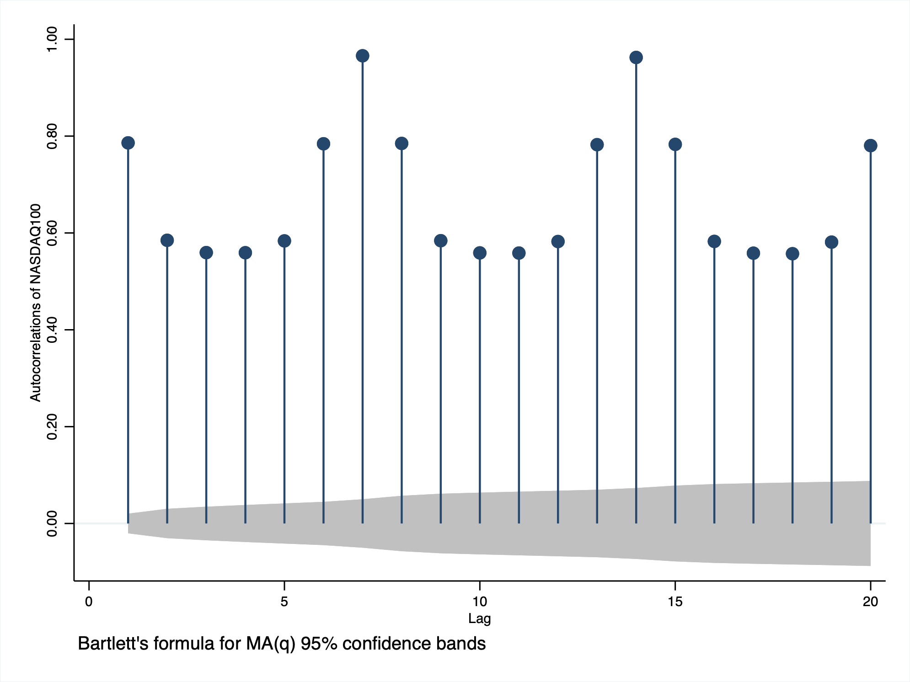
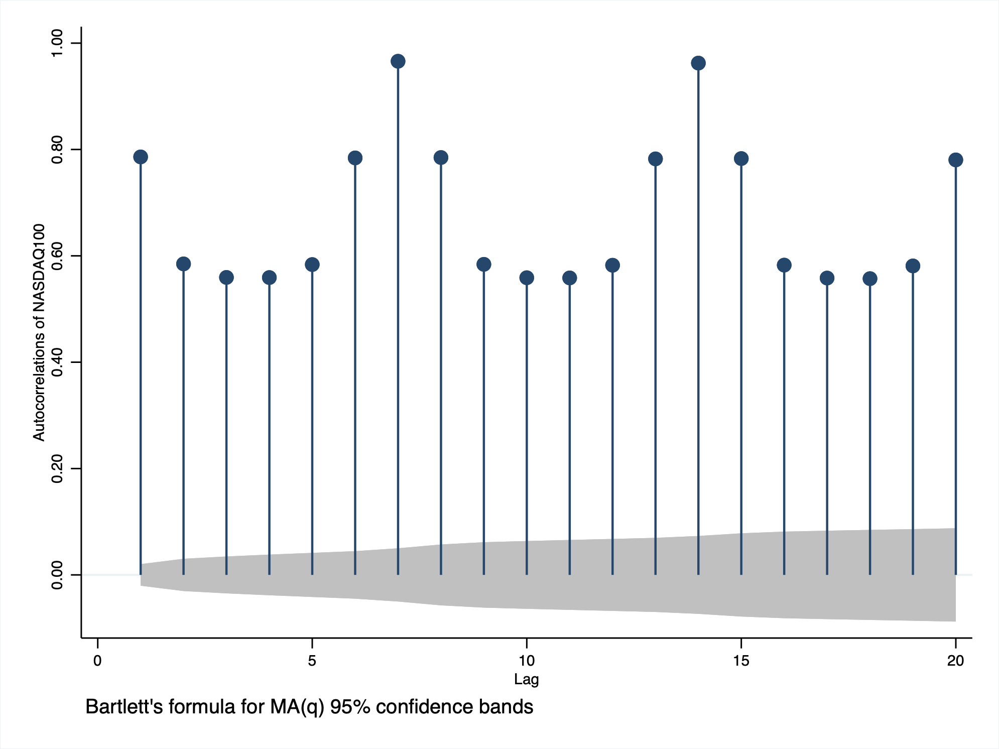

STATIONARITY
. import excel "/Users/simoneboschetti/Desktop/DATA/cpi%change.xls", sheet("FRED Graph") cellrange(A11:B676) firstrow clear
(2 vars, 665 obs)
. rename CORESTICKM159SFRBATL_PCH cpichange
. tsset observation_date
Time variable: observation_date, 01jan1968 to 01may2023, but with gaps
Delta: 1 day
. summarize cpichange
Variable | Obs Mean Std. dev. Min Max
-------------+---------------------------------------------------------
cpichange | 665 .2236149 5.294714 -20.35727 32.53381
Stationarity
. import excel "/Users/simoneboschetti/Desktop/DATA/NASDAQ100.xls", sheet("FRED Graph") cellrange(A11:B9663) firstrow clear
(2 vars, 9,652 obs)
. rename observation_date date
. label variable date "date"
. tsset date
Time variable: date, 02jan1986 to 30dec2022, but with gaps
Delta: 1 day
. summarize NASDAQ100
Variable | Obs Mean Std. dev. Min Max
-------------+---------------------------------------------------------
NASDAQ100 | 9,327 2871.658 3469.038 128.43 16573.34
Non Stationarity
 
